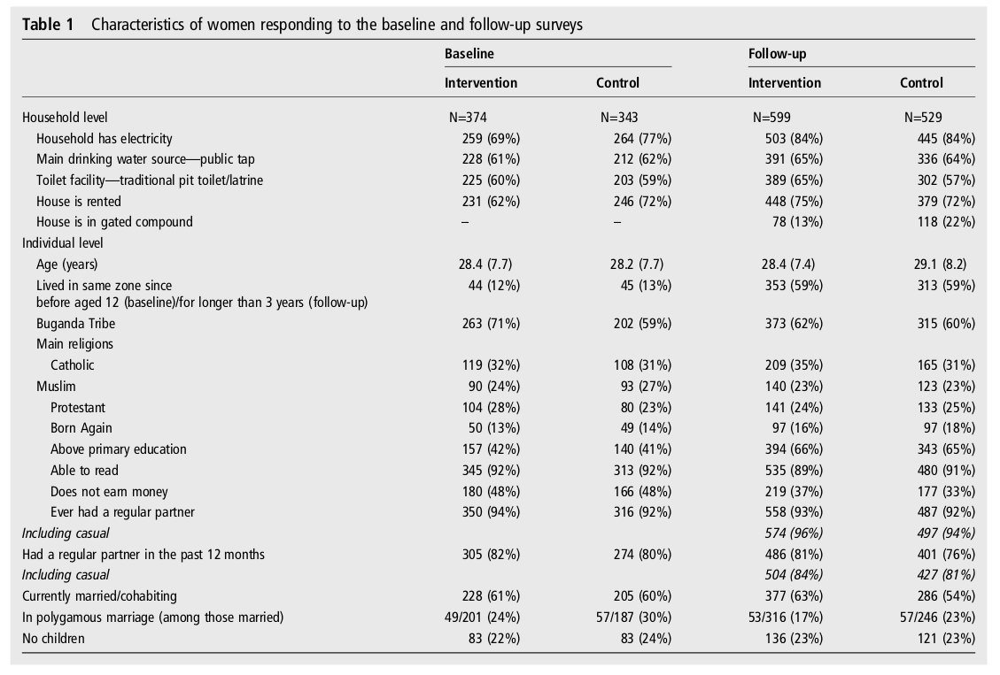
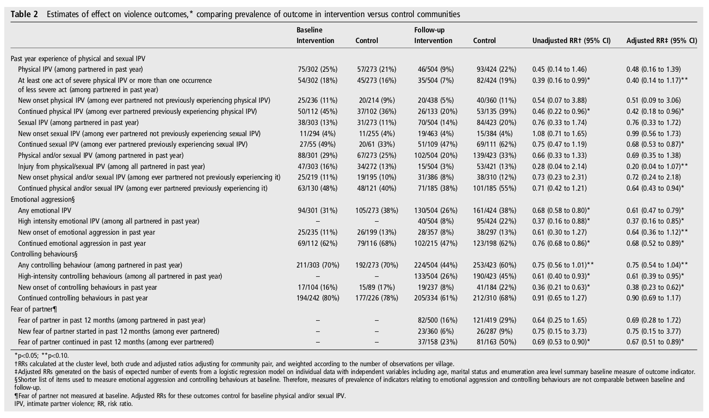

|

../../cm-ucl/corpus-oa-pmr-v02/10.1136_jech-2015-206665/tables/table1/table.png
|
|
Intervention |
Control |
Intervention |
Control |
| Household level |
N=374 |
N=343 |
N=599 |
N=529 |
| Household has electricity |
259 (69%) |
264 (77%) |
503 (84%) |
445 (84%) |
| Main drinking water source— public tap |
228 (61%) |
212 (62%) |
391 (65%) |
336 (64%) |
| Toilet facility— traditional pit toilet/latrine |
225 (60%) |
203 (59%) |
389 (65%) |
302 (57%) |
| House is rented |
231 (62%) |
246 (72%) |
448 (75%) |
379 (72%) |
| House is in gated compound |
– |
– |
78 (13%) |
118 (22%) |
| Individual level |
|
|
|
|
| Age (years) |
28.4 (7.7) |
28.2 (7.7) |
28.4 (7.4) |
29.1 (8.2) |
| Lived in same zone since |
44 (12%) |
45 (13%) |
353 (59%) |
313 (59%) |
| before aged 12 (baseline)/for longer than 3 years (follow-up) |
|
|
|
|
| Buganda Tribe |
263 (71%) |
202 (59%) |
373 (62%) |
315 (60%) |
| Main religions |
|
|
|
|
| Catholic |
119 (32%) |
108 (31%) |
209 (35%) |
165 (31%) |
| Muslim |
90 (24%) |
93 (27%) |
140 (23%) |
123 (23%) |
| Protestant |
104 (28%) |
80 (23%) |
141 (24%) |
133 (25%) |
| Born Again |
50 (13%) |
49 (14%) |
97 (16%) |
97 (18%) |
| Above primary education |
157 (42%) |
140 (41%) |
394 (66%) |
343 (65%) |
| Able to read |
345 (92%) |
313 (92%) |
535 (89%) |
480 (91%) |
| Does not earn money |
180 (48%) |
166 (48%) |
219 (37%) |
177 (33%) |
| Ever had a regular partner |
350 (94%) |
316 (92%) |
558 (93%) |
487 (92%) |
| Including casual |
|
|
574 (96%) |
497 (94%) |
| Had a regular partner in the past 12 months |
305 (82%) |
274 (80%) |
486 (81%) |
401 (76%) |
| Including casual |
|
|
504 (84%) |
427 (81%) |
| Currently married/cohabiting |
228 (61%) |
205 (60%) |
377 (63%) |
286 (54%) |
| In polygamous marriage (among those married) |
49/201 (24%) |
57/187 (30%) |
53/316 (17%) |
57/246 (23%) |
| No children |
83 (22%) |
83 (24%) |
136 (23%) |
121 (23%) |
../../cm-ucl/corpus-oa-pmr-v02/10.1136_jech-2015-206665/tables/table1/table.svg.html
|
|

../../cm-ucl/corpus-oa-pmr-v02/10.1136_jech-2015-206665/tables/table2/table.png
|
../../cm-ucl/corpus-oa-pmr-v02/10.1136_jech-2015-206665/tables/table2/table.svg.html
|